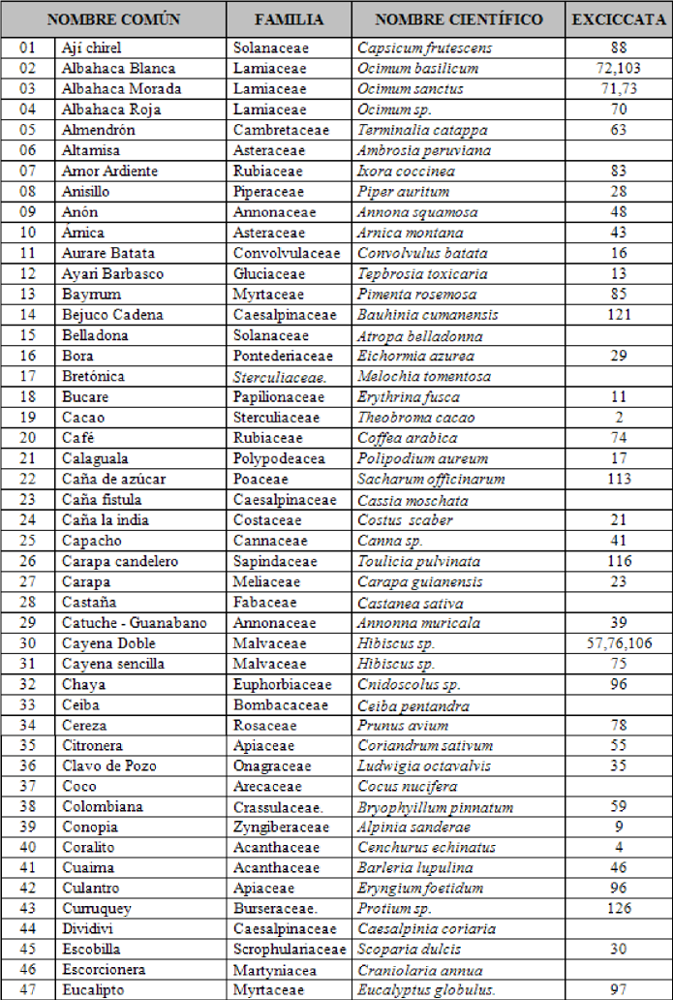
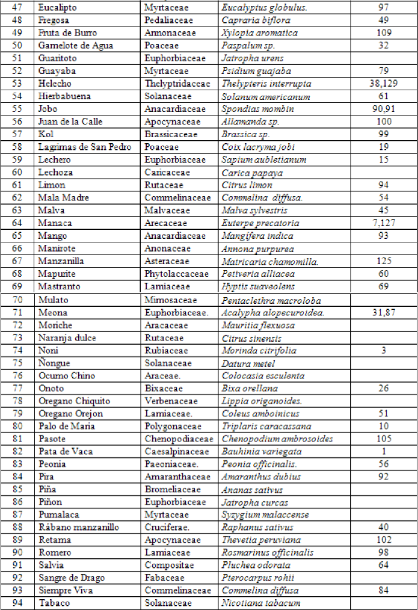

Plantas Medicinales
Se muestra el listado completo de las 106 plantas mencionadas medicinales para curar alguna dolencia o afecciones de los miembros de la comunidad de Winiquina y Tucupita. En este cuadro se colocaron el nombre común, la familia botánica, el nombre científico y la exsiccata de cada una de ellas:

